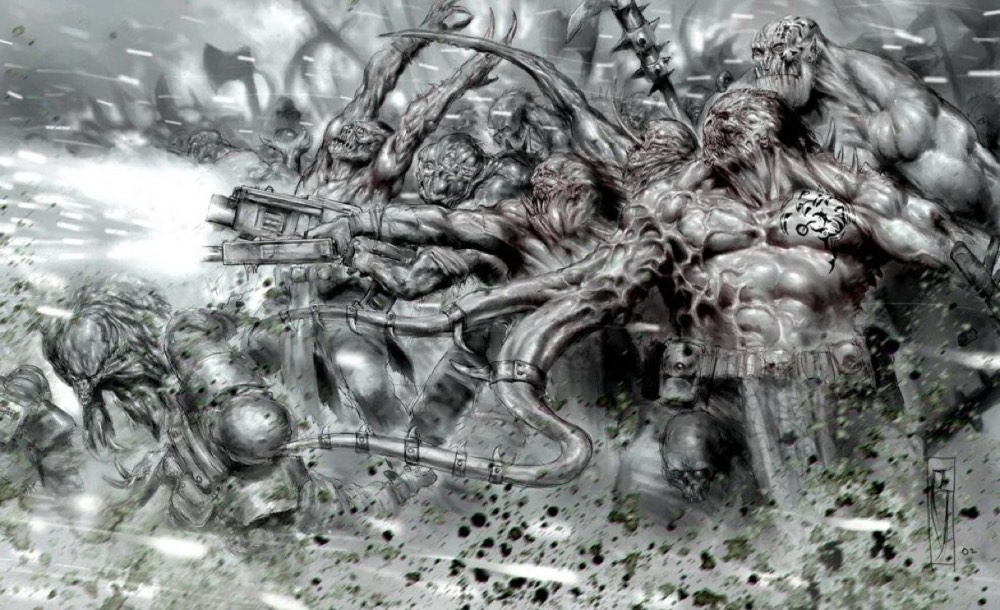
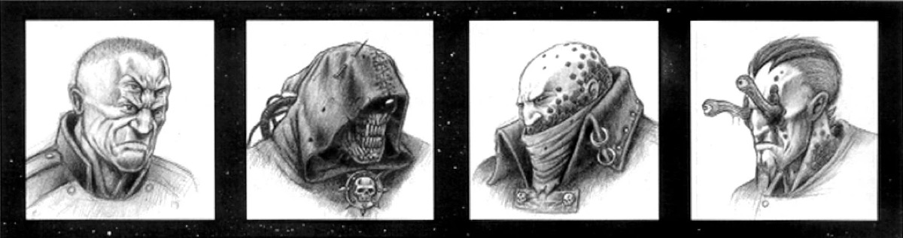

Mutant
| Mutant Mutatus | |
|---|---|
 A mutant uprising, from an Adeptus Arbites report Artwork © Games Workshop | |
| Definition | Human deviating from the human genetic pattern |
| Causes | Radiation, pollution, toxins, inbreeding, Warp exposure, Chaos influence, xenos infection |
| Legal status | Without rights on most worlds; tolerated as labour on some; proscribed outright on others |
| Assessment | Godolkin Purebreed Guide (Godolkin Index) |
| Exceptions | Abhuman strains; Navigators; sanctioned psykers |
| Policed by | Planetary Governors; Adeptus Arbites; Inquisition; Ecclesiarchy |
A mutant (in the vulgar Low Gothic, a mutie) is a human being whose body differs from the human genetic pattern. In the Imperium of Mankind the word covers a vast range of conditions, from a minor deformity to a body changed beyond recognition, and it carries a heavy weight of law and religion. The Imperial Cult teaches that the human form was made in the image of the Emperor of Mankind and that mutation is a sign of spiritual corruption; Imperial law therefore treats mutants as less than citizens, and on many worlds as outlaws to be killed on sight.[1][2]
Mutants are nonetheless extremely common. The poisoned environments of hive worlds, the radiation of mining and forge worlds, inbreeding on isolated worlds and exposure to the Warp all produce them in numbers that no Imperial authority can eliminate. On many worlds they form an underclass of forced labour; on others they live hidden in the depths of hive cities or in the wastes. Mutant populations have been a frequent source of rebellion and of recruits for Chaos cults, and the Imperium has fought many wars to suppress them.[3][4]
Imperial law distinguishes ordinary mutants from abhumans, stable variants of humanity such as Ogryns and Ratlings that breed true and are accepted as citizens, and from the hereditary mutation of the Navigators, which is protected by ancient privilege. Psychic ability is also a form of mutation, governed by its own laws (see Psyker).[1]
Causes
[edit]Imperial records attribute mutation to several causes. The most common are environmental: radiation, industrial pollution, chemical and biological toxins. Others are hereditary, the result of long isolation and inbreeding. The most feared are spiritual: exposure to the Warp, which can twist flesh directly, and the favour of the Chaos Gods, whose followers are often marked with gifts of mutation. Some mutations result from xenos infection, such as the hybrids of the Genestealer Cults, or from disease, such as the plagues of Nurgle.[4][3]
Classification
[edit]The official standard for distinguishing humans from mutants is the Godolkin Purebreed Guide, also known as the Godolkin Index. It scores a subject's deviations from the human phenotype by a system of points: the more severe the mutation, the higher its value. A subject whose total exceeds a set threshold is classed as a mutant. Planetary authorities set their own thresholds and penalties, so that a person counted human on one world may be put to death on another.[1][3][a]

History
[edit]The Age of Strife
[edit]Mutation spread widely among human populations during the Age of Strife (c. M25–M30), when worlds cut off by warp storms suffered war, radiation and the collapse of medical technology. On Terra itself much of the population of the Unification Wars era (c. M30) was mutated. The Emperor's armies purged the mutated warbands of the techno-barbarians, but also recruited stable strains, the forerunners of the abhumans, into the Imperial Army.[5]
The Great Crusade and after
[edit]During the Great Crusade (c. 798.M30–005.M31) the secular Imperial Truth judged mutants by their usefulness rather than their sin, and markedly divergent strains such as Beastmen served the Imperium. After the Horus Heresy (005–014.M31), in which mutant hordes fought for the traitors, and with the rise of the Imperial Cult in the 32nd millennium, hostility hardened into doctrine. The Liber Ecclesiasticus (M37) describes mutation as the outward sign of inward corruption.[2][5]
The 41st and 42nd millennia
[edit]Mutant uprisings are among the commonest internal wars of the Imperium. They range from riots in the underhives to rebellions that topple planetary governments and draw in the Astra Militarum. The Adeptus Arbites maintain extensive records of such outbreaks, and the Inquisition investigates the cults that often stand behind them. In the Era Indomitus, after the Great Rift opened in 999.M41, warp exposure and the plagues of the Plague Wars (c. 012.M42) produced mutation on an unprecedented scale in parts of Ultramar and the Imperium Nihilus.[3][6]
Life in the Imperium
[edit]The treatment of mutants depends on the world. On some, all mutants are killed at birth or as soon as they are discovered. On many hive and industrial worlds they are tolerated as a source of cheap labour, working in the most dangerous industries, forbidden to marry or hold property, branded or segregated and denied the protection of the law. Some worlds confine them to ghettos or penal colonies; others drive them into the wastes. Mutants are excluded from the Imperial priesthood and from most offices, and are often refused the rites of the Cult.[3][1]
Excluded from society, mutants have repeatedly turned to cults that promise them dignity or vengeance. Chaos cults in particular recruit among them, and the gifts of mutation that the Chaos Gods bestow can make outcasts into worshippers. The Imperium regards a mutant population as a standing threat for this reason, and the Inquisition and the Ecclesiarchy have preached purges in many sectors.[4]
Mutation and Chaos
[edit]Not all mutation is the work of Chaos, but the followers of the Chaos Gods are frequently mutated, and mutation is held to be one of the clearest signs of Chaos influence. The servants of Nurgle bear the marks of disease, those of Tzeentch shifting and multiplying changes. The Heretic Astartes of the traitor Legions are often grossly mutated after ten thousand years in the Eye of Terror. A Chaos warrior who receives too many gifts may degenerate into a mindless spawn.[4][5]
Timeline
[edit]| Date | Event |
|---|---|
| c. M25–M30 | Widespread mutation in the Age of Strife |
| c. M30 | Mutant warbands purged on Terra; stable strains recruited |
| 005–014.M31 | Mutant hordes fight for the traitors in the Horus Heresy |
| M32 | Hostility to mutants becomes doctrine of the Imperial Cult |
| M37 | Liber Ecclesiasticus condemns mutation as corruption |
| c. 012.M42 | Plague Wars cause mass mutation in Ultramar |
See also
[edit]Notes
[edit]- ^ The date of the Godolkin Guide is not recorded. It is cited in Administratum and Arbites documents of the 41st millennium as a long-established standard.
References
[edit]- ^ a b c d Haley, Guy. Baneblade (novel). Black Library, pg. 263.
- ^ a b Warhammer 40,000: Rulebook (6th Edition), pp. 148, 158, 172-173, 177, 180, 218-219, 232, 404-405. Games Workshop.
- ^ a b c d e Warhammer 40,000: Rogue Trader (1st Edition), pp. 52-57. Games Workshop.
- ^ a b c d Kill Team - Rogue Trader (Specialty Game), "A Growing Sickness".
- ^ a b c Black Crusade: The Tome of Blood (RPG), pg. 17.
- ^ Dark Heresy: The Disciples of the Dark Gods (RPG), pg. 57.